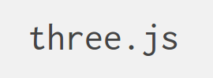

MicroMachines
Created by Ben Swanson, Pak Loon-Cheng and Chloe Kaian-Lam
Tech Stack
Three.JS
JavaScript 3D library
The aim of the project is to create a lightweight 3D library with a very low level of complexity — in other words, for dummies. The library provides <canvas>, <svg>, CSS3D and WebGL renderers.
Socket.io
Used to stream controls to each car from a mobile device.
Node.JS
Hosts the game, routes the player's web sockets and serves this presentation.

Autodesk Maya
3D Modelling software
Many of the 3D models had to be re-sized, re-textured and have their number of polygons reduced
Tech Challenges
Physics
All the physics are hand calculated in the animation cycle
Collisions
Ray-casting
Ray-casting involves drawing a line in a particular direction and then seeing if the line intersects any meshes
Three.JS has this functionality built in.
Pre-loading 3D models
Three.JS has the ability to load specially converted 3d models
Python script to convert wavefront .obj files into three.js json models
Callback passed to model loader did not recieve which model was loaded. Just its geometry and materials.
Web Sockets
Tying the opened socket to the game objects.
Car input - Data model
this.input = {
forward: false,
backwards: false,
left: false,
right: false
}
Socket control
socket.on('move car', function (data) {
var moveDirection = data.direction;
if(moveDirection === 'forward'){
targetCar.forward = true;
} else if(moveDirection === 'left'){
targetCar.left = true;
} else if(moveDirection === 'right'){
targetCar.right = true;
} else {
}
});